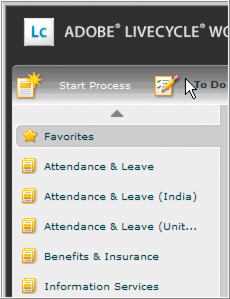
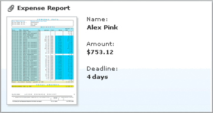
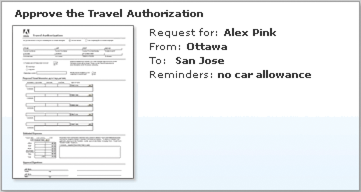

|

When
developing human-centric processes for Workspace, process designers
and administrators can employ several techniques to ensure a favorable
user experience in Workspace:
Use short category names
In Workspace, category names appear in the
left navigation pane and are used to designate groups of processes. You
create categories using Workspace start point properties.
If the category name is too long to fit within the fixed width
of the left navigation pane, it is truncated. The full name appears
only when the mouse pointer is paused over it. By default, the navigation
pane has a fixed width of 210 pixels, which is approximately 24
characters. Avoid using category names that are truncated:
-
Category name that fits:
-
Attendance & Leave
-
Category name that is truncated:
-
Attendance & Leave (United States)

Limit the number of process cards per category
In Workspace, cards on the Start Process page
represent processes that users can invoke. You include processes
in categories using the Category property of Workspace start points.
Limit the number of process cards per category so that users
do not have to scroll the page to view cards. Cards that require
scrolling in order to be seen are difficult to find. The resolution
of the monitor affects the number of process cards that can fit
on the screen without scrolling.
The following illustration shows the Start Process page for a
category when the screen resolution is set to 1024 x 768.
At this resolution, the Start Process page can contain six process
cards before scrolling is required.
Use effective card information
Task cards in Workspace expose key information to users.
Cards enable users to quickly scan tasks, make decisions based on
information, and interact with processes without opening the task.
Cards include the following items:
Card titles
Use card titles that are descriptive
and limited in length to prevent truncation:
-
Card title that fits:
-
Expense Report
-
Card title that is truncated:
-
Please approve this Expense Report
Keep the titles
unique to help users locate the card quickly. Test the card title to
ensure that it can be easily distinguished from other cards. Status
icons that can appear to the left of the title can require titles
to be shorter than you expect.
The way you specify card names
depends on where the card appears:
Task instructions on task cards
Provide instructions
on process cards and task cards that are meaningful to users. On
task cards, the values of process variables can be included to help
users evaluate the task without opening it.
You can format task instructions by using HTML markup. For example,
line breaks and the boldface type style are used to lay out the
task instructions so that information can be easily scanned.
The way you specify task instructions depends on where the card appears:
Instructions that use plain labels, line breaks, and bold variables
The
illustration below shows the following example task instructions:
Name:<br><b>{$/process_data/@name$}</b></p>
Amount: <br><b>{$/process_data/@total$}</b></p>
Deadline:<br><b>{$/process_data/@deadlineDays$}</b></p>

Instructions that use plain labels, colons, bold variable, and line breaks
The
illustration below shows the following example task instructions.
Note:
These instructions are contained in a single line
of text.
Request for: <b>{$/process_data/@name$}</b><br>From: <b>{$/process_data/@origin$}</b><br>To: <b>{$/process_data/@destination$}</b><br>Reminders: <b>{$/process_data/@hints$}</b>

Instructions that use bold variables within static text
The illustration
below shows the following example task instructions.
Note:
These instructions are contained in a single line
of text.
<b>{$/process_data/@name$}</b> requested authorization for the <b>{$/process_data/@processName$}</b> starting for <b>{$/process_data/@total$}</b> in <b>{$/process_data/@quarter$}</b>. Please verify that this request does not exceed your allowance for the quarter.
Image size in process cards
When you create a process, you can
specify an image to use that represents the process in Workspace.
(See
Creating processes using the New Process wizard
.) The image formats
supported are JPG and PNG. The color should not be prescribed.
Reduce your image size to 150 x 150 pixels. You can compress
the image before you add it to the process without losing quality.
Use tools such as Adobe Fireworks® CS3,
available from
http://www.adobe.com
.
Email notifications
If your processes are designed to use email notifications,
consider how the content of the email appears to the recipient.
Task Instructions can be included in the body of the email by using
the Process Management variable @@instructions@@. If your email
is configured to include the @@instructions@@ variable, consider
how that content appears when the email notification is sent to
the recipient. If necessary, customize and format the email notification
by using Process Management variables and HTML tags.
Configure email settings in the Process Management area in LiveCycle Administration
Console. (See “Configuring notifications” in
Process Management
ES2
Help.)
You can also configure email settings in Workbench 9.5. (See
Overriding task notification settings
.)
|
|
|

 You can also create categories using the Category
Management area of Applications and Services in LiveCycle Administration
Console. (See
You can also create categories using the Category
Management area of Applications and Services in LiveCycle Administration
Console. (See